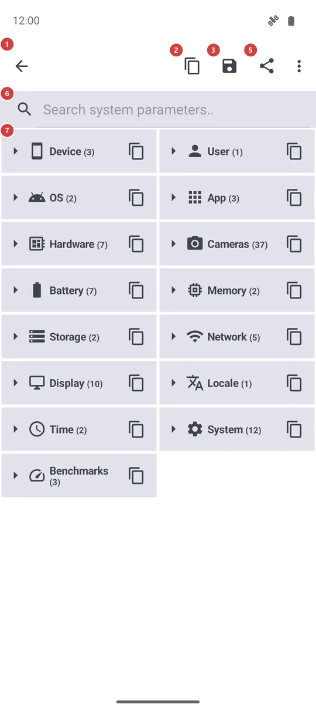
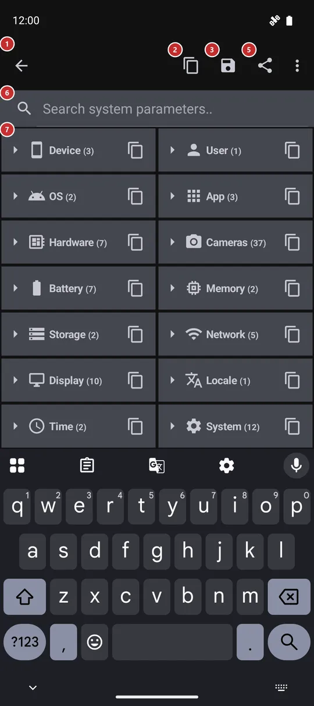

System information
What this is for
A readable report about your phone and about this app: the device, Android version, battery, memory, storage, network, display and more. You can search it, copy a single value or the whole report, save it to a file or send it, which is what a person helping you with a problem usually asks for.


In this order
- Open the screen and wait a moment while the report is gathered. The groups appear collapsed, one line each, with the number of values inside.
- Tap a group 7 to open it. Expand all 4 opens every group at once, and the same key closes them. The app remembers which groups you left open.
- To find one value, type in the search field 6. Every group with a match opens and only the matching rows stay on the screen.
- Tap a row 7 to copy that value, or the copy key on a group's line to copy the whole group.
- To pass on everything, use Copy 2, Save 3 or Share 5. Look through the report first, because it contains technical identifiers of your device and network.
The elements
Title bar
1Back arrowLeaves the screen and returns to where you came from.
The title bar names the screen, System information, and the arrow in front of it takes you back, for example to the programs menu or to Settings. Nothing is lost: the report is gathered again the next time you open the screen.
Report actions
2CopyCopies the whole report to the clipboard as plain text.
Use it to paste the report into a chat or an email. The text lists the groups in the order of the screen, including those that are collapsed or hidden by a search. It holds every value the screen can show, so read it through before you paste it into a public place.
3SaveWrites the whole report to a text file in your Downloads folder.
The file is named fms_system_info plus the date and time, and a message tells you where it went. If the file cannot be written, a message says so and nothing is saved. Use it when you want to attach the report to a message rather than paste it.
4Expand all / Collapse allOpens every group at once, or closes every group.
The icon and the name change with the state: when everything is open it closes the groups, otherwise it opens them all. Your choice is remembered for the next visit. On a narrow screen the key may sit in the overflow menu.
Search and the list
6Search system parameters..Narrows the report to the parameters that match what you type.
It looks in the names of the groups, the names of the values and the values themselves, ignoring upper and lower case. The groups with a match open for the time being, without changing what you left open. If nothing matches, the list says so. Clear the field to get your groups back.
7Groups and parametersThe report itself, in groups that you open and close.
Each group has an icon, a name and the number of its values. Tap the line to open or close it; the small copy key at the right end copies only that group, and a message names the group. Open groups list their values as rows of a name and a value; tap a row to copy it as name: value. In landscape the closed groups sit in four columns instead of two.
The groups are Device, User, OS, App (version, build and edition), Hardware (processor and chip, kernel, graphics version, the app's memory limit), Cameras (what the phone declares and what the app made of it), Battery, Memory, Storage, Network (connection type, metered, VPN, airplane mode and the local address), Display, Locale, Time, System (language list, security patch, build fingerprint, installer, install dates) and Benchmarks. A group with nothing to show is left out.
Benchmarks are short tests of memory and storage speed that run each time you open the screen, so the figures are rough and differ from run to run. In the noLegal edition seven more groups follow: OS & Security, Special Permissions, Installer & Signature, Bundled Runtimes, Mounts & Storage, Network Diagnostics and Process Resources.